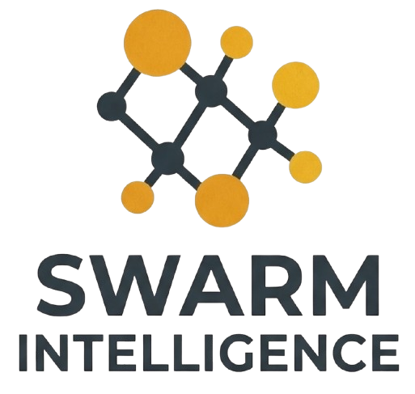
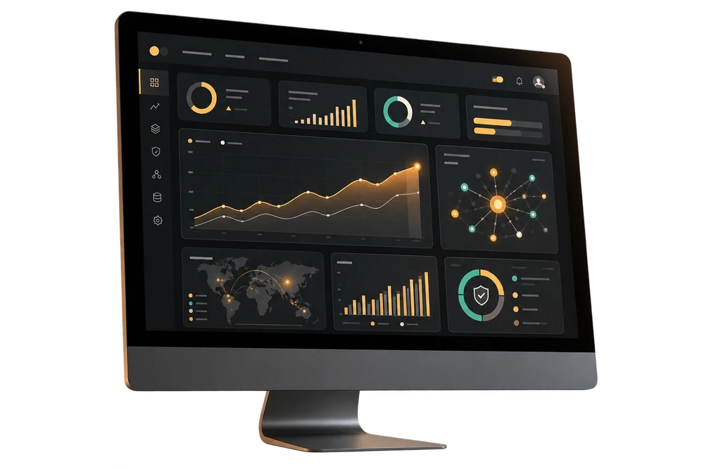
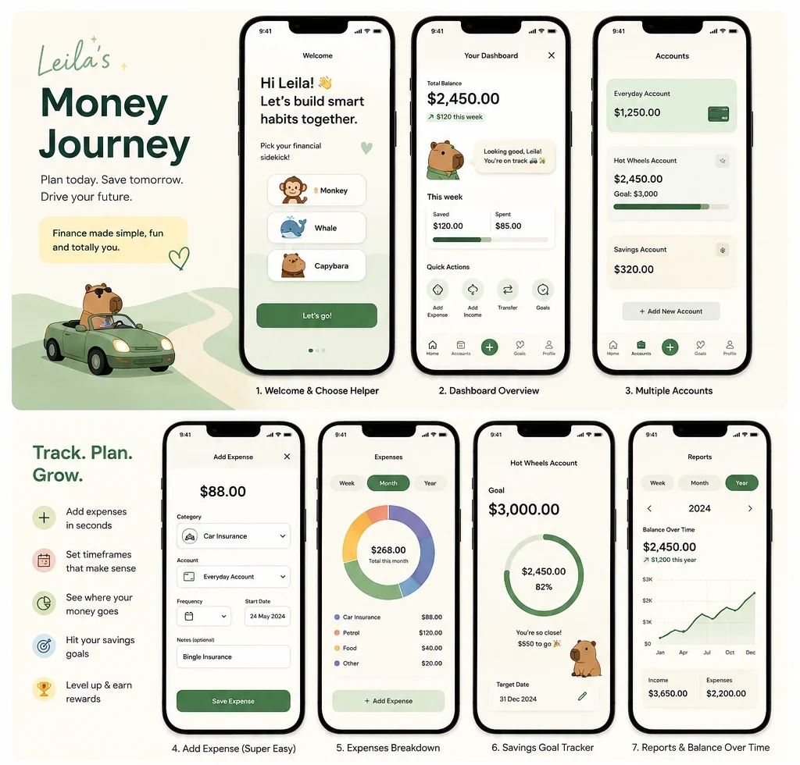

Data & AI direction
Practical strategies, roadmaps and decision support that connect investment to real organisational outcomes.

EST. 2008 · ADELAIDE, AUSTRALIA
Strategy · Architecture · Delivery
Navigating complexity and helping organisations move toward clarity, alignment and measurable outcomes. No unnecessary platforms. No manufactured dependency.
Good transformation is not about introducing more technology. It is about making better decisions, building capability and creating solutions people can sustain.
What we do
Swarm works directly with leaders and delivery teams when strategy, architecture, information and practical execution need to come together.
Practical strategies, roadmaps and decision support that connect investment to real organisational outcomes.
Modern data platforms, integration and analytics designed for the realities of legacy systems, governance and operating constraints.
Hands-on guidance from concept through delivery, bringing technical, business and executive perspectives into one workable path.
Clear decision records, delivery controls and evidence that help teams move safely without losing momentum.
Technology experience includes Microsoft Azure, Fabric, Databricks, Power BI and the integration patterns around them. Recommendations remain technology-aware and organisation-led.
Selected experience
More than 25 years across government, higher education, financial services and industry, spanning engineering, architecture, operations and executive leadership.
Current contribution
Working across South Australian Government with a whole-of-government view of data. Anthony brings modern architecture, integration, analytics and information design to digital-service transformation while navigating legacy and on-premises constraints, security, governance and delivery dependencies. The work includes practical thinking across Microsoft Azure, Databricks, Fabric and Power BI, with a focus on reusable patterns and capability that can work across agencies.
2020–2026
Co-founded and grew a specialist consultancy working with complex organisations across data, analytics and AI. Anthony shaped the operating model, led delivery and capability, supported senior client decisions and translated ambitious ideas into work that teams could execute. The role combined commercial leadership with hands-on involvement in architecture, delivery quality, people development and the everyday mechanics of building a trusted consultancy.
Earlier leadership
Led multidisciplinary teams across higher education, financial services, government and industry. The work ranged from data engineering, warehousing and business intelligence through cloud platforms, self-service analytics, information strategy and enterprise operating models. Anthony has worked at the point where technology, organisational change and service delivery meet, building both the foundations and the teams needed to sustain them.
People
Swarm is deliberately personal, direct and senior-led. The people in the conversation are the people doing the work.
Founder & Principal
Anthony is a data, AI and transformation leader with more than 25 years of experience across strategy, architecture, engineering, operations and delivery. He moves comfortably between executive conversations and the detail of how systems, information and teams actually work. His strength is making complex problems understandable, finding a practical path forward and staying close enough to delivery to make sure the thinking holds up in the real world.
Connect on LinkedInProduct & Operations
Kym supports Swarm’s product work and day-to-day operations, helping shape research, testing and customer experience around simple, useful ideas.
Swarm Labs · Accelerators, frameworks and products
Practical assets shaped by real delivery. Each one solves a specific problem without creating dependency on Swarm.
A deployable, client-owned architecture spanning Azure, Databricks and Power BI, with infrastructure, governance and delivery patterns built in.
A practical path from evidence to a decision-ready product. AI can accelerate the work, while people retain control through defined review, accessibility and governance gates.

A calm, private companion for bills, spending, goals and casual income. It turns the week ahead into simple guidance, visual progress and small wins that build money confidence without judgement.
Plan · Track · Save · Learn

Start a conversation
If you need senior thinking, practical architecture or a clearer path through a transformation challenge, let’s talk.
Discuss your challengeAdelaide, South Australia · Working across Australia